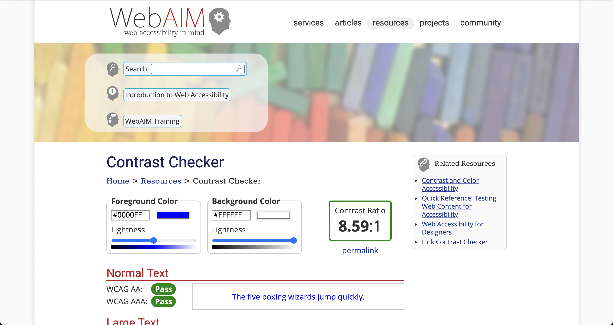
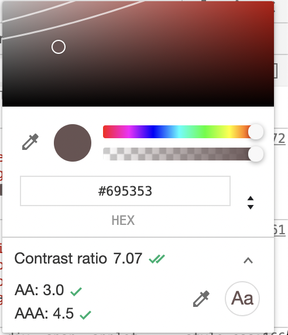
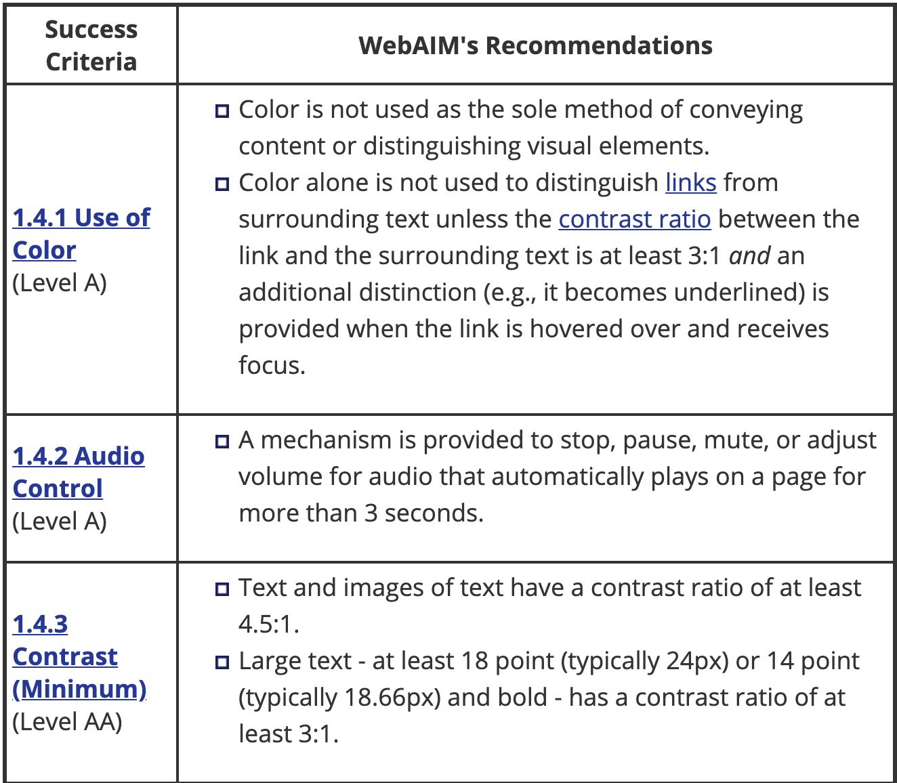
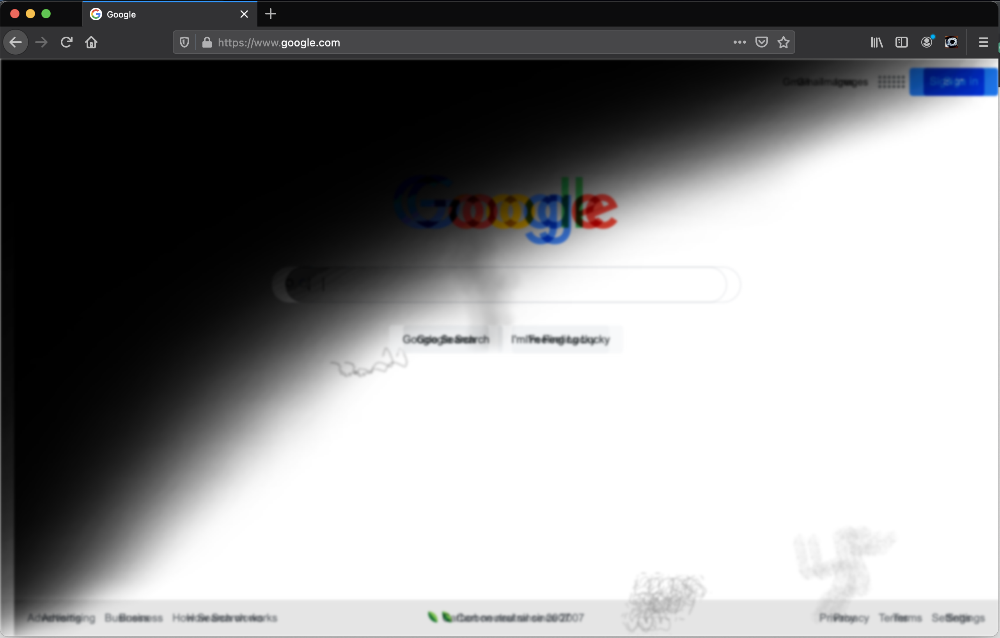
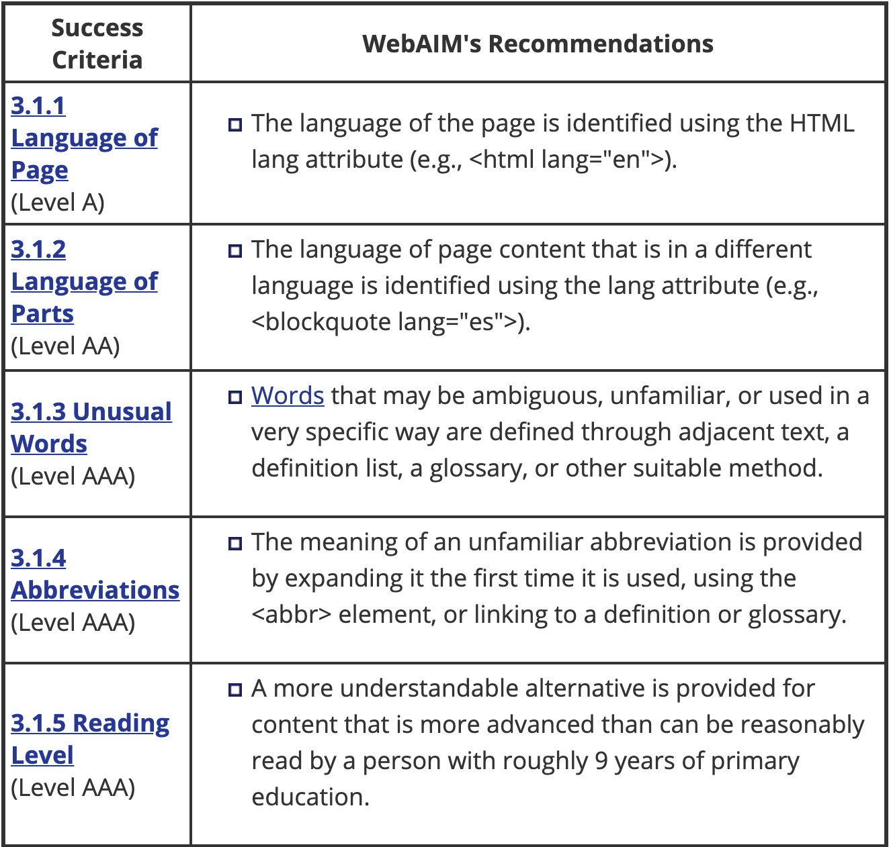
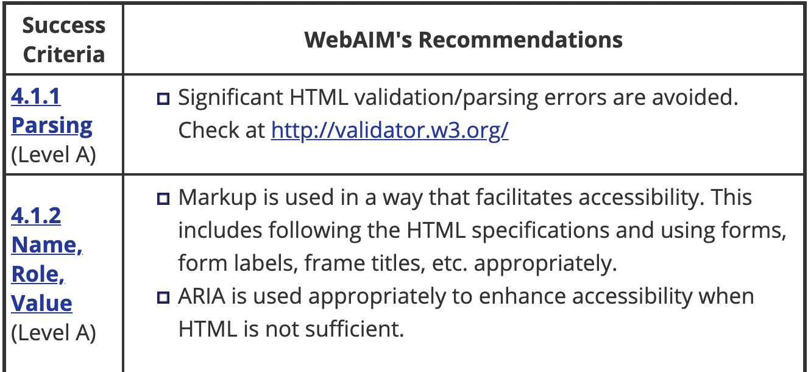
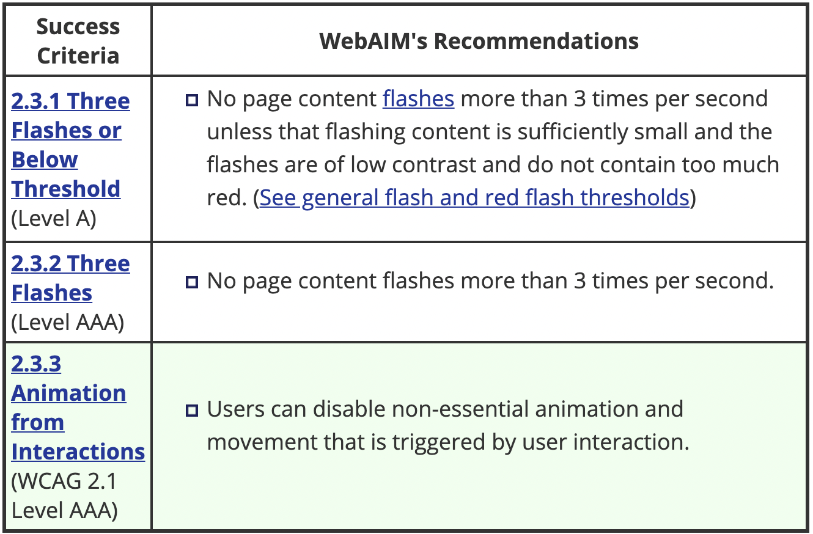

Visual Considerations
Color Contrast
WebAIM
To check color contrast online, use the WebAIM contrast checker.
Chrome DevTools
Did you know the Chrome DevTools come with a built-in accessibility color checker?
Colors and forms
An important consideration for colorblind users is making sure that color isn't the only way users can tell if there is an error with the form. For example, a red ring is not enough. Consider adding an icon or an error label.
Visual Impairments
To simulate a number of visual impairments on any website, check out NoCoffee for Firefox
Proximity of notifications from what you're doing
Helps neurological and also low vision (another curb cut example)
Setting the language
Remember to set the lang attribute both on the top level html tag as well as any sections where the language deviates from it.
Fix markup errors
Although it won't always have a user facing effect, it is recommended that you find and fix and validation or parsing errors in your HTML.
Neurocognitive
Prefers Reduced Motion
Users can set a "prefers reduced motion" setting in their operating system (Windows, Mac, Linux) and we can read that setting in CSS and swap out animations with more subtle effects.
This is important both as a preference and also to avoid causing issues for users who may suffer from seizures.
The code
HTML
<div class="animation">animated box</div>
CSS
.animation {
animation: pulse 1s linear infinite both;
}
@media (prefers-reduced-motion) {
.animation {
animation-name: dissolve;
}
}
All Together

Prefers Color Scheme
Another amazing API is one that allows us to detect if the user prefers a "light" or "dark" colorscheme.
The Code
HTML
<div class="wrapper">
...
</div>
CSS
@media (prefers-color-scheme: dark) {
.wrapper {
background: black;
}
}
@media (prefers-color-scheme: light) {
.wrapper {
background: white;
}
}
Exercise 5
Let's read and set dark mode for our website in exercise 5.